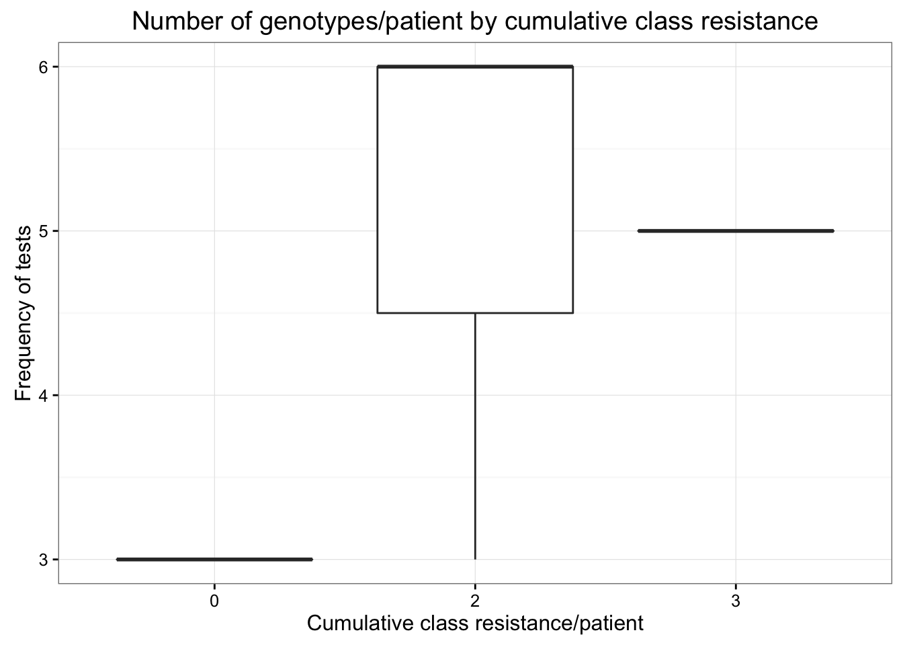

library("dplyr")
library("tidyr")
library("ggplot2")
library("readr")The data is from a genotype test where the sequence of part of the HIV pol gene is sequenced. The patient sequence is compared to a database to identify resistance causing mutations.
The 3 classes of drugs tested are NRTI, NNRTI, PI. Don’t worry about drug specifics for the purposes of this exercise
For this dataset, no drug resistance for that class is coded as 0 and resistance is coded as 1.
Load database results for patients in study.
db = read_csv("datasets/DB_results.csv")
## Parsed with column specification:
## cols(
## PATID = col_integer(),
## First_pos_test = col_date(format = ""),
## ENUM = col_character(),
## DRAWN_DATE = col_date(format = ""),
## NRTI = col_integer(),
## NNRTI = col_integer(),
## PI = col_integer()
## )Load table with all the sequences for the clinic.
seqs = read_csv("datasets/All_sequences.csv")
## Parsed with column specification:
## cols(
## PATID = col_integer(),
## DRAWN_DATE = col_date(format = ""),
## LOCATION = col_character(),
## ENUM = col_character(),
## TESTCODE = col_character(),
## STRING = col_character()
## )What did we just load?!
glimpse(db)
## Observations: 23
## Variables: 7
## $ PATID <int> 4, 4, 4, 5, 5, 5, 5, 5, 5, 1, 1, 1, 7, 7, 7, 7,...
## $ First_pos_test <date> 1995-07-10, 1995-07-10, 1995-07-10, 1999-02-01...
## $ ENUM <chr> "104A", "083A", "274A", "160A", "266A", "314A",...
## $ DRAWN_DATE <date> 2001-10-23, 2008-10-15, 2011-09-22, 2003-09-04...
## $ NRTI <int> 0, 0, 0, 1, 1, 0, 1, 0, 0, 0, 1, 1, 1, 0, 0, 1,...
## $ NNRTI <int> 0, 0, 0, 1, 1, 1, 1, 0, 1, 0, 0, 1, 1, 0, 0, 1,...
## $ PI <int> 0, 0, 0, 0, 0, 0, 0, 0, 0, 0, 0, 0, 0, 0, 0, 0,...
glimpse(seqs)
## Observations: 33
## Variables: 6
## $ PATID <int> 12, 1, 1, 1, 13, 14, 15, 2, 3, 3, 3, 3, 3, 4, 4, 4,...
## $ DRAWN_DATE <date> 2003-09-22, 2006-02-06, 2006-12-19, 2010-05-25, 20...
## $ LOCATION <chr> "Calgary_AB", "Calgary_AB", "Calgary_AB", "Calgary_...
## $ ENUM <chr> "180A", "241A", "562B", "318A", "292A", "201A", "02...
## $ TESTCODE <chr> "VIRCOGENPR", "POL_1017", "VIRCOGENPR", "VIRCOGENPR...
## $ STRING <chr> "CCTCAAATCACTCTTTGGCAACGACCCCTCGTCACAATAAAGATAGGGGG...Is this tidy data? Why or why not?
To do our analysis we need to combined the information from the two tables. To do this we’ll use a join operation. Here we use a left join which will add the columns from the sequences table to the db table only where there is a match base on a ‘key’ column. We’ll let the left_join() function decide which columns to use as keys, based on column names
all = left_join(db, seqs)
## Joining, by = c("PATID", "ENUM", "DRAWN_DATE")
all
## # A tibble: 23 × 10
## PATID First_pos_test ENUM DRAWN_DATE NRTI NNRTI PI LOCATION
## <int> <date> <chr> <date> <int> <int> <int> <chr>
## 1 4 1995-07-10 104A 2001-10-23 0 0 0 Calgary_AB
## 2 4 1995-07-10 083A 2008-10-15 0 0 0 Calgary_AB
## 3 4 1995-07-10 274A 2011-09-22 0 0 0 Calgary_AB
## 4 5 1999-02-01 160A 2003-09-04 1 1 0 Calgary_AB
## 5 5 1999-02-01 266A 2005-04-21 1 1 0 Calgary_AB
## 6 5 1999-02-01 314A 2008-08-26 0 1 0 Calgary_AB
## 7 5 1999-02-01 090B 2009-09-02 1 1 0 Edmonton_AB
## 8 5 1999-02-01 493A 2010-10-20 0 0 0 Calgary_AB
## 9 5 1999-02-01 897A 2015-11-17 0 1 0 Calgary_AB
## 10 1 1986-08-06 241A 2006-02-06 0 0 0 Calgary_AB
## # ... with 13 more rows, and 2 more variables: TESTCODE <chr>,
## # STRING <chr>all = all %>% rename(Pat_ID = PATID,
First_positive_test = First_pos_test,
Geno_ID = ENUM,
Geno_date = DRAWN_DATE,
Location = LOCATION,
Sequence = STRING)And we don’t want the TESTCODE column, let’s drop it
all = all %>% select(-TESTCODE)Finally let’s get our tidy data
final = all %>% gather(Drug, Resistance, NRTI, NNRTI, PI)Note that I didn’t want intermediate copies of the data here so I’ve simply keep using the same object name to overwrite the previous one. Sometimes in your own analysis you may want to keep certain intermediate copies.
First we want to calculate the sum of the resistance for all three drugs for eacch genotype results
meta = final %>%
group_by(Geno_ID, Pat_ID) %>%
summarise(sum_resistance = sum(Resistance))Currently, HIV is not cured by the ARV drugs, only suppressed in the body. Therefore patients can acumulate resistance over time. If you look at the data, you can see that some patients have different resistance results. This is because the PCR used in the genotype only records the most abundant HIV variant circulating at that time but there are many variants in the population of that patient so we often assume that resistance is cumulative and therefore we want to categorize patients by their maximum resistance score ever (i.e. cumulative resistance).
cumm_res = meta %>%
group_by(Pat_ID) %>%
summarise(max_res = max(sum_resistance))meta = left_join(meta, cumm_res, by = "Pat_ID")Count the number of tests per patient in each category
ccr_counts = meta %>%
group_by(Pat_ID, max_res) %>%
summarise(freq = length(max_res)) Plot the results in a boxplot
ccr_counts %>%
ggplot(aes(x = factor(max_res), y = freq)) +
geom_boxplot() +
theme_bw() +
labs(x = "Cumulative class resistance/patient",
y = "Frequency of tests",
title = "Number of genotypes/patient by cumulative class resistance")